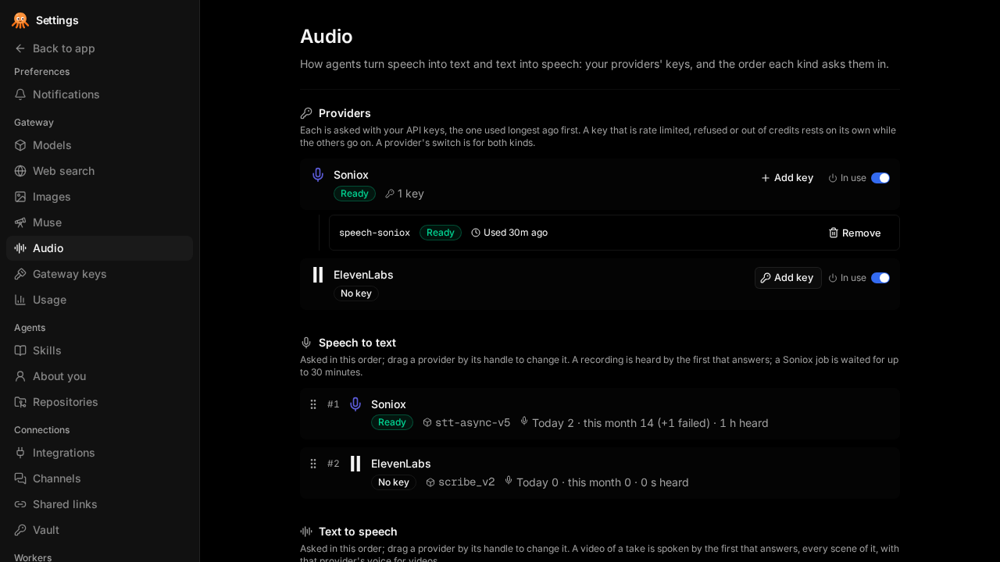
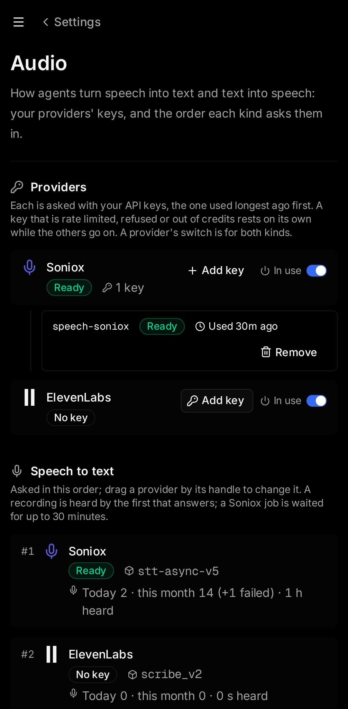

Issue #1283: Settings → Audio, ElevenLabs model picker and voices by name (after review round 1)
Playwright against the production build with a fake client API (web/tests/audio.spec.ts), desktop (1280×720) and phone (Pixel 7), dark and light.
ElevenLabs's text-to-speech row: model picker (Eleven v4, the default) and voice by name; Soniox's voice typed, as on main (dark)
The model picker open: ElevenLabs's own speech models, each with how many languages it covers (dark)
The voice picker open: the account's voices by name, with their language (dark)
After picking Eleven v3 and Sơn Trần (dark)
The same, light theme (light)
Soniox's voice typed by name or id (Maya) and saved, as on main (dark)
The whole page, ElevenLabs without a key (default model eleven_v4 shown) (dark)
